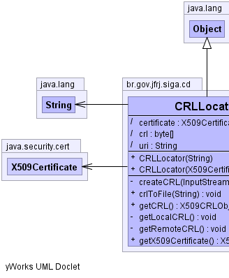

br.gov.jfrj.siga.cd.CRLLocator
br.gov.jfrj.siga.cd.CRLLocator
|
|||||||||
| PREV CLASS NEXT CLASS | FRAMES NO FRAMES | ||||||||
| SUMMARY: NESTED | FIELD | CONSTR | METHOD | DETAIL: FIELD | CONSTR | METHOD | ||||||||
java.lang.Object
public class CRLLocator
|  |  |
| Field Summary | |
|---|---|
(package private) java.security.cert.X509Certificate |
certificate
|
(package private) byte[] |
crl
|
(package private) java.lang.String |
uri
|
| Constructor Summary | |
|---|---|
CRLLocator(java.lang.String uri)
Método construtor que permite a busca de CRLs localmente. |
|
CRLLocator(java.security.cert.X509Certificate certificate)
Método construtor que permite a busca de CRLs remotamente. |
|
| Method Summary | |
|---|---|
private void |
createCRL(java.io.InputStream crl)
Método utilitário usado para fazer a leitura do InputStream de uma CRL (Tanto de arquivo como da Web) |
void |
crlToFile(java.lang.String path)
Uma vez carregada a CRL, tanto localmente como remotamente, é possível salvá-la em disco para uso posterior. |
org.bouncycastle.jce.provider.X509CRLObject |
getCRL()
Uma vez instanciado o objeto, é possível fazer a busca da CRL referente ao certificado a ser verificado. |
private void |
getLocalCRL()
Este método buscará a CRL localmente. |
private void |
getRemoteCRL()
Quando a classe é instanciada usando CRLLocator(X509Certificate certificate) a busca pela CRL é feita remotamente. |
java.security.cert.X509Certificate |
getX509Certificate()
Caso tenha sido usado o construtor CRLLocator(X509Certificate certificate) é possível recuperar o certificado que foi passado para CRLLocator. |
| Methods inherited from class java.lang.Object |
|---|
clone, equals, finalize, getClass, hashCode, notify, notifyAll, toString, wait, wait, wait |
| Field Detail |
|---|
byte[] crl
java.security.cert.X509Certificate certificate
java.lang.String uri
| Constructor Detail |
|---|
public CRLLocator(java.security.cert.X509Certificate certificate)
certificate - Certificado X509 que está sendo verificado.public CRLLocator(java.lang.String uri)
uri - Caminho completo para a CRL referente ao certificado que está
sendo verificado. Exemplo: 'C:\CRLs\Cert.crl'| Method Detail |
|---|
private void createCRL(java.io.InputStream crl)
throws java.io.IOException
crl -
java.io.IOException
private void getLocalCRL()
throws java.io.IOException
java.io.IOException
private void getRemoteCRL()
throws java.io.IOException
java.io.IOException
java.io.IOException
java.lang.Exception
java.lang.Exception
public void crlToFile(java.lang.String path)
throws java.io.FileNotFoundException,
java.io.IOException
path - Caminho completo para onde a CRL deve ser salva. Exemplo:
'C:\MinhasCrls\Lista.crl'
java.io.FileNotFoundException
java.io.IOExceptionpublic java.security.cert.X509Certificate getX509Certificate()
public org.bouncycastle.jce.provider.X509CRLObject getCRL()
throws InvalidCRLException,
java.security.cert.CRLException
java.security.cert.CRLException
InvalidCRLException
|
|||||||||
| PREV CLASS NEXT CLASS | FRAMES NO FRAMES | ||||||||
| SUMMARY: NESTED | FIELD | CONSTR | METHOD | DETAIL: FIELD | CONSTR | METHOD | ||||||||